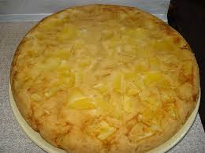
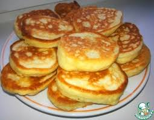

Классический борщ
Ингредиенты:
- Свекла — 2 шт
- Картофель — 3 шт
- Капуста — 300 г
- Мясо — 400 г
Приготовление:
Отвариваем мясо, добавляем овощи, немного томатной пасты и варим до готовности. Подаём со сметаной.
Рецепт добавлен: 12 октября 2025

Яблочный пирог
Ингредиенты:
- Яблоки — 3 шт
- Мука — 200 г
- Яйца — 3 шт
- Сахар — 100 г
Приготовление:
Взбиваем яйца с сахаром, добавляем муку, выкладываем яблоки и выпекаем при 180°C около 40 минут.
Рецепт добавлен: 15 октября 2025

Оладьи на кефире
Ингредиенты:
- Кефир — 300 мл
- Мука — 200 г
- Яйцо — 1 шт
- Сода — 1 ч. ложка
Приготовление:
Смешать все ингредиенты до густого теста и жарить на сковороде с двух сторон до румяной корочки.
Рецепт добавлен: 20 октября 2025


Отзывы
“Спасибо за рецепт борща, получился идеальный!” — Оля
“Пирог просто тает во рту ❤️” — Катя
“Оладушки получились пышные, спасибо бабушке Тане!” — Лена